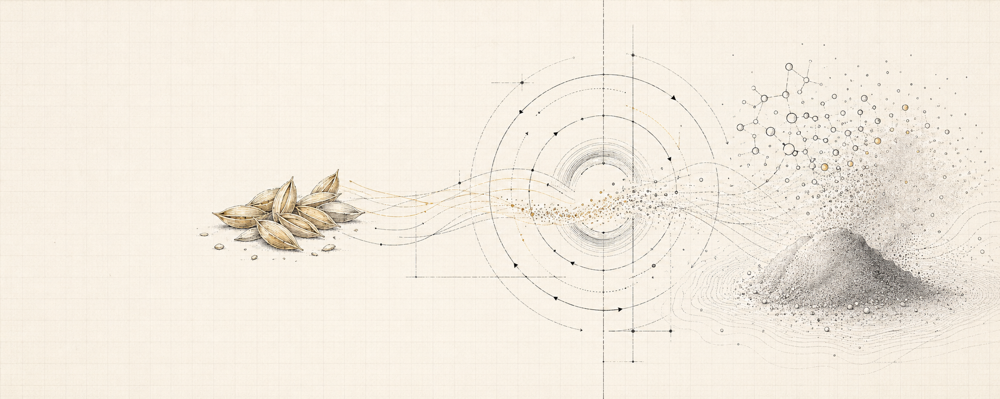
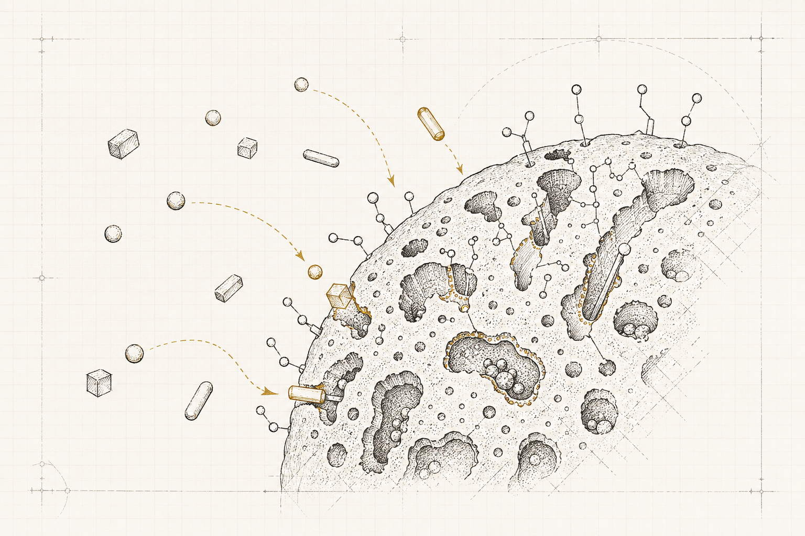

IN-HOUSE R&D / RICE HUSK SILICA
もみ殻を、
機能性シリカへ。
地域で生まれる農業残渣を、次の素材へ。
抽出プロセスと表面設計の検証に向け、構想を整理しています。

01 / ORIGIN
なぜ、もみ殻か。
身近な農業残渣を「処理するもの」ではなく、「設計できる原料」として捉え直します。
地域で発生するものを、
地域の価値へ変える。
もみ殻は米作に伴って継続的に発生し、灰分にシリカを含む植物由来の資源です。私たちは、もみ殻からシリカを取り出し、用途に必要な機能を与えるまでを、一つのプロセスとして検証する構想を進めています。
素材を大量に作ることが出発点ではありません。原料特性、抽出条件、評価方法、用途の要求をつなぎ、成立する小さな事業単位を見つけることが狙いです。
抽出条件
素材評価
表面設計
用途評価
02 / PoC POSITION
自社PoCの現在地。
現在はラボ検証に着手する前の準備段階です。実施済みのことと、これから確かめることを分けて示します。
CONCEPT
資源・用途仮説
原料特性と出口の仮説を整理
LAB VALIDATION現在ココ・着手前
ラボ検証準備
検証項目と実施条件を整理
PoC DESIGN
パイロット検討
ラボ結果をもとに構成を検討
PILOT TEST
実証・データ取得
プロセスと物性を評価
IMPLEMENT
用途開拓・社会実装
評価先と実装条件を具体化
ラボ検証の準備段階
現時点では実験・設備設計ともに未着手です。まず、検証する項目と実施条件を整理する段階にあります。
ラボ検証への着手
試料、抽出条件、組成・表面特性などの評価方法を定め、小さなスケールで検証を始めることが次の段階です。
PoC・パイロット検討
ラボ検証で得た結果を踏まえて、設備構成やスケールアップの妥当性を検討していく想定です。
設備の3D形状は検討途中のため掲載していません。具体的なプロセス条件も、今後の検証を経て定めます。
03 / SURFACE DESIGN作るだけでなく、
作るだけでなく、
表面を設計する。
シリカはすでに広く使われている素材です。私たちが検討しているのは、粒子表面の構造や性質を用途に合わせて設計し、必要な機能へつなげるアプローチです。
表面の状態が変われば、吸着する対象や他素材とのなじみ方も変わります。今後、評価データを積み上げながら、もみ殻由来シリカを機能性素材へ育てられるかを確かめます。
CONFIDENTIAL RANGE
今後の検証で得られる具体的な処理条件・設計手法は、必要に応じて秘密保持契約のもとでご説明します。

04 / APPLICATION AREAS
用途を、評価データとともに。
現時点では用途を限定せず、植物由来と表面設計の価値が活きる領域を検討しています。
化粧品原料
植物由来という背景と、粉体として求められる特性を両立できるかを検討します。
分離・精製材料
表面設計によって、対象物質を選択的に吸着・分離できる可能性を評価します。
地域資源循環
もみ殻を原料として捉え直し、抽出後の副産物も含めた地域内の価値循環を検討します。
記載分野は研究開発上の探索対象であり、性能や事業化を示すものではありません。
05 / EVALUATION PARTNER
素材の可能性を、
素材の可能性を、
一緒に確かめる。
将来のサンプル評価、用途探索、共同検討に関心のある企業・研究機関の方へ。構想段階からでもご相談いただけます。